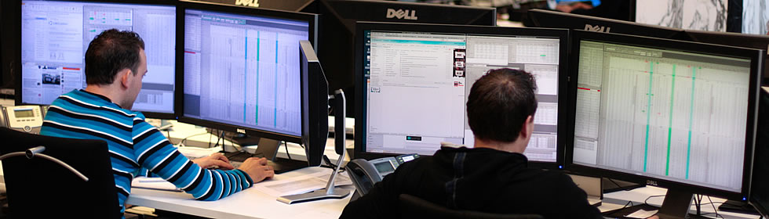
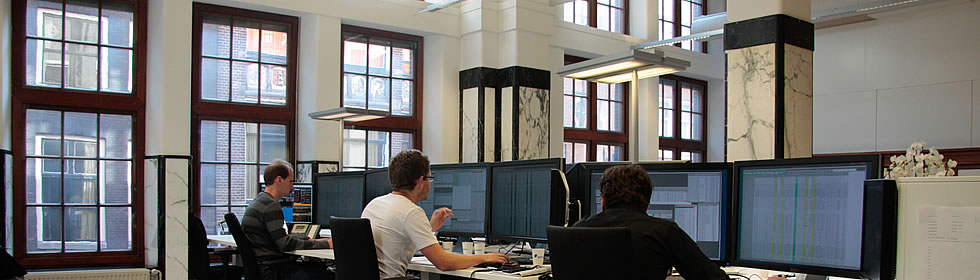

About us
Established in 2011, and located at Beursplein 5 in Amsterdam, Criterion Arbitrage & Trading BV, engages in market making and various arbitrage strategies in listed derivatives on the European cash - and derivatives markets.
Leaning on extensive market experience of the partners, Criterion has the ambition to play a significant role in the proprietary wholesale trading segment.

As a market maker we quote continuous bid and ask prices in listed options and other derivatives, providing liquidity to the exchanges we operate on, including Euronext, Liffe, Xetra and Eurex. Alongside this quoting activity, our desks run a range of arbitrage strategies that capture pricing differences between related instruments and markets, always within strict, pre-defined risk limits.
Amsterdam has been the home of options trading since the founding of the European Options Exchange, and Beursplein 5 remains a natural base for firms like ours. Operating from this location keeps us close to the exchanges, to the liquidity, and to the network of market makers and brokers that shape the local derivatives market.
Within that market, Criterion positions itself as a lean, independent proprietary trading firm. Rather than competing on size, we compete on speed of decision making, discipline in risk management, and the direct involvement of our partners in day-to-day trading. It is this combination that allows a relatively small firm to hold its own alongside much larger market makers.

To achieve that goal, we are looking for enthusiastic young academics with a team oriented attitude, and a strong wish to excel and who want to work in a dynamic and collegial environment.